Didukung oleh SDM profesional dan berintegritas, management perusahaan yang kredibel dan akuntabel, di awasi oleh OJK serta dijamin oleh LPS.
Proses pelayanan yang mudah dan transparan dengan menerapkan regulasi OJK secara update.
Halal, Bermanfaat dan Menjadi Berkah untuk seluruh nasabah, karena dijalankan sesuai dengan prinsip Syariah.
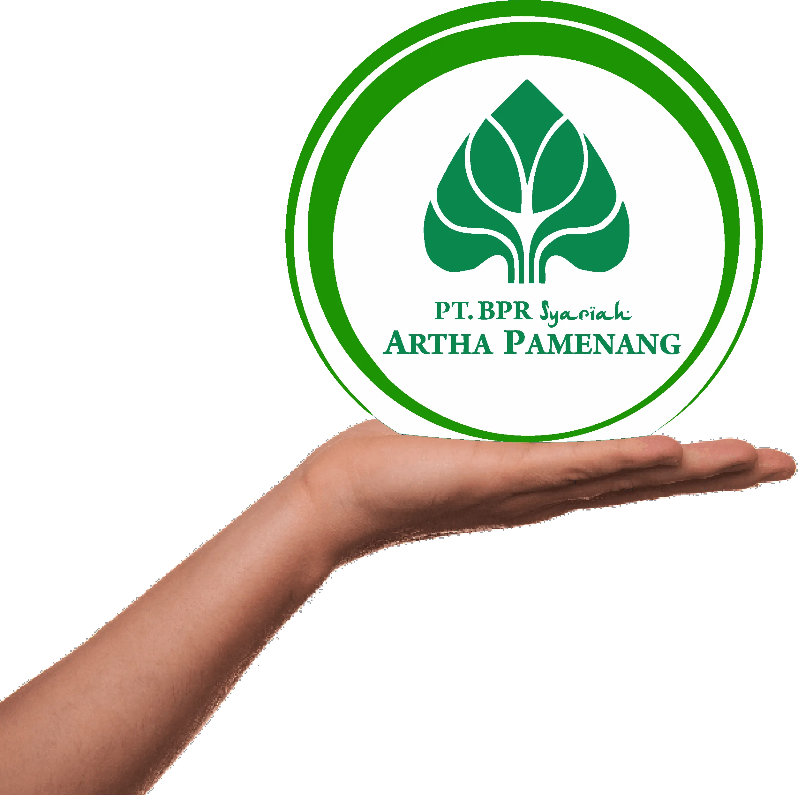
PT. Bank Pembiayaan Rakyat Syariah Artha Pamenang berdiri pada tanggal 23 maret 2010, berdasarkan akta nomor 162 tanggal 29 oktober 2009 dan telah mendapatkan persetujuan dari Kementerian Hukum dan Hak Asasi Manusia Republik Indonesia, sesuai surat keputusan nomor AHU-57676.01.01 tahun 2009 tanggal 25 Nopember 2009.
BPR Syariah Artha Pamenang ini merupakan BPR Syariah pertama yang dimiliki oleh Group Artha Pamenang setelah 3 BPR konvensional yang telah beroperasi lebih dari 20 tahun.
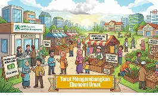
Menjadi Mitra Sejati dalam Pengembangan Ekonomi Umat.
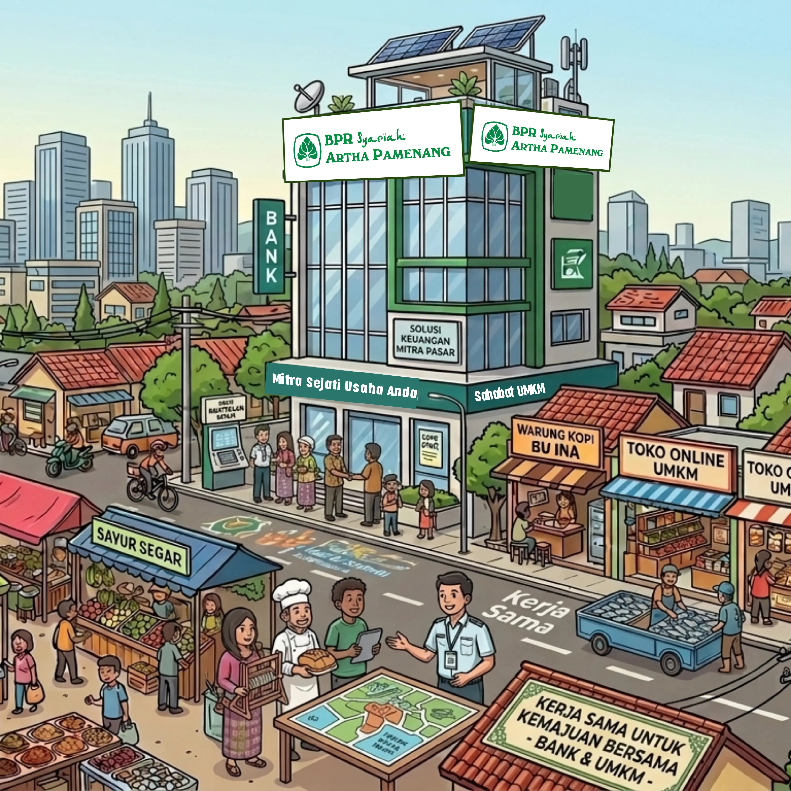
Ikut Serta Membangun Bangsa Melalui Pengembangan Ekonomi Syariah.
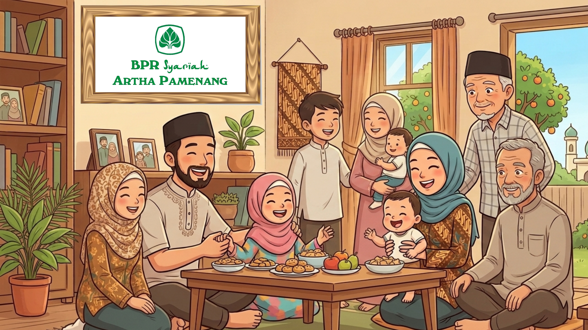
Dengan Syariah Hidup Lebih Barokah.
BPR Syariah Artha Pamenang berizin dan diawasi oleh OJK
BPR Syariah Artha Pamenang merupakan peserta penjaminan LPS (hingga Rp. 2 Miliar)
Pengajuan pembiayaan dengan syarat minimal dan proses yang transparan.
Seluruh produk dirancang sesuai prinsip syariah Islam — halal, berkah, dan bebas riba.
Sejak 2010, kami hadir melayani masyarakat Kediri dan sekitarnya dengan sepenuh hati.
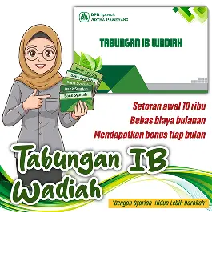
Tabungan aman, bebas riba, bebas biaya bulanan dan mendapatkan bonus secara periodik.
Lihat Detail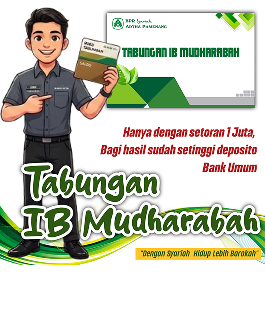
Produk simpanan yang menggunakan akad kerja sama (bagi hasil) antara nasabah sebagai pemilik dana dan bank sebagai pengelola dana.
Lihat Detail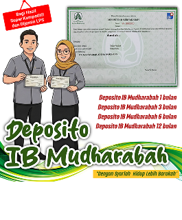
Produk investasi dengan sistem bagi hasil kompetitif yang sesuai dengan prinsip ekonomi syariah.
Lihat Detail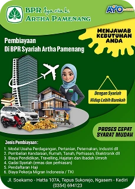
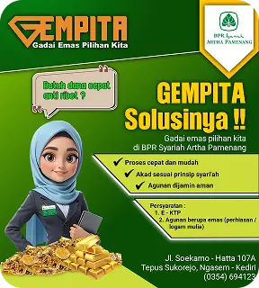
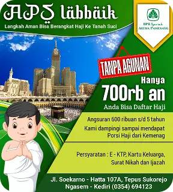
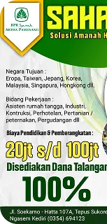
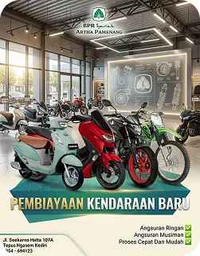
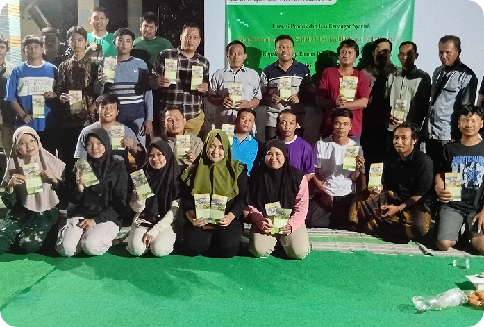
Dalam rangka mengedukasi literasi keuangan kepada masyarakat dan sekaligus promosi produk, BPR Syariah menggandeng karang taruna desa Besuk Gurah.
Acara tersebut di gelar pada hari Jum'at, 26 Juni 2026 yang mana telah di ikuti pengurus dan anggota karang taruna desa Besuk. Mereka sangat antusias untuk mengikuti pemaparan materi dari BPR Syariah Artha Pamenang tentang produk produk pembiayaan dan simpanan, literasi keuangan, bahaya pinjol dan terutama materi Sahabat TKI yaitu pembiayaan utk kebutuhan calon TKI